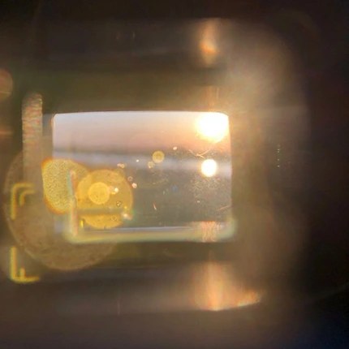
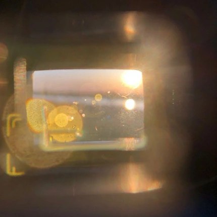

Наша история
Всё началось с одной записи — шороха кассеты
и гудка старого телефона, с осознания, что звук уходит быстрее, чем вещи.
Так появился REWAVE — личная коллекция,
ставшая цифровым музеем, где мы записываем,
реставрируем и сохраняем звуки, чтобы память
звучала честно.


 
